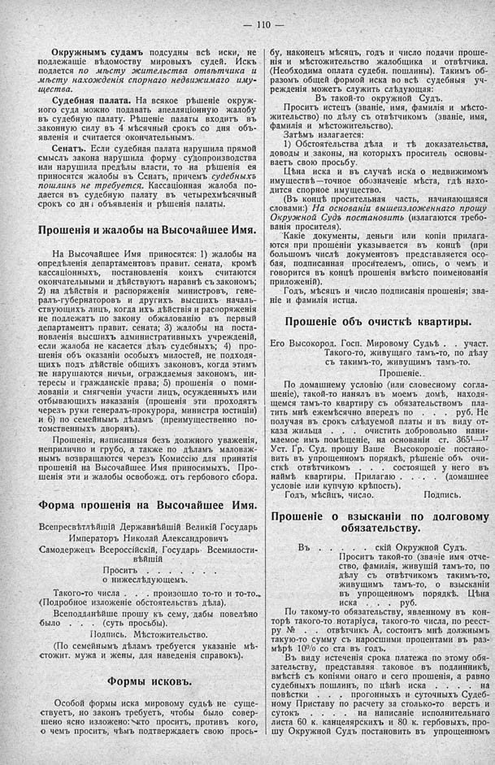

Лист источника 156
Скан

Распознанный текст
— 110 —
Окружнымъ судамъ подсудны всѣ иски, не
подлежащіе вѣдомоству мировыхъ судей. Искъ
подается по мѣсту жительства отвѣтчика и
мѣсту нахожденія спорнаго недвижимаго иму-
щества.
Судебная палата. На всякое рѣшеніе окруж-
ного суда можно подавать апелляціонную жалобу
въ судебную палату. Рѣшеніе палаты входитъ въ
законную силу въ 4 мѣсячный срокъ со дня объ-
явленія и считается окончательнымъ.
Сенатъ. Если судебная палата нарушила прямой
смыслъ закона нарушила форму судопроизводства
или нарушила предѣлы власти, то на рѣшенія ея
приносятся жалобы въ Сенатъ, причемъ судебныхъ
пошлинъ не требуется. Кассаціонная жалоба по-
дается въ судебную палату въ четырехмѣсячный
срокъ со днѣ объявленія и рѣшенія палаты.
Прошенія и жалобы на Высочайшее Имя.
На Высочайшее Имя приносятся: 1) жалобы на
опредѣленія департаментовъ правит. сената, кромѣ
кассаціонныхъ, постановленія коихъ считаются
окончательными и дѣйствуютъ наравнѣ съ закономъ;
2) на дѣйствія и распоряженія министровъ, гене-
ралъ-губернаторовъ и другихъ высшихъ началь-
ствующихъ лицъ, когда ихъ дѣйствія и распоряженія
не подлежатъ по закону обжалованію въ первый
департаментъ правит. сената; 3) жалобы на поста-
новленія высшихъ административныхъ учрежденій,
если жалоба не касается дѣлъ судебныхъ; 4) про-
шенія объ оказаніи особыхъ милостей, не подходя-
щихъ подъ дѣйствіе общихъ законовъ, когда этимъ
не нарушаются ничьи, ограждаемыя закономъ, ин-
тересы и гражданскіе права; 5) прошенія о поми-
лованіи и смягченіи участи лицъ, осужденныхъ или
отбывающихъ наказанія (прошенія эти проходятъ
черезъ руки генералъ-прокурора, министра юстиціи)
и 6) по семейнымъ дѣламъ (преимущественно по-
томственныхъ дворянъ).
Прошенія, написанныя безъ должного уваженія,
неприлично и грубо, а также по дѣламъ маловаж-
нымъ возвращаются черезъ Комиссію для принятія
прошеній на Высочайшее Имя приносимыхъ. Про-
шенія эти и жалобы освобожд. отъ гербового сбора.
Форма прошенія на Высочайшее Имя.
Всепресвѣтлѣйшій Державнѣйшій Великій Государь
Императоръ Николай Александровичъ
Самодержецъ Всероссійскій, Государь Всемилости-
вѣйшій
Проситъ . . . . . . . . . .
о нижеслѣдующемъ.
Такого-то числа . . . произошло то-то и то-то.
(Подробное изложеніе обстоятельствъ дѣла).
Всеподданѣйше прошу къ сему, дабы повелѣно
было . . . . (суть просьбы).
Подпись. Мѣстожительство.
(По семейнымъ дѣламъ требуется указаніе мѣ-
стожит. мужа и жены, для наведенія справокъ).
Формы исковъ.
Особой формы иска мировому судьѣ не суще-
ствуетъ, но законъ требуетъ, чтобы было совер-
шено ясно изложено: кто проситъ, противъ кого,
о чемъ проситъ, чѣмъ подтверждаетъ свою прось-
бу, наконецъ мѣсяцъ, годъ и число подачи проше-
нія и мѣстожительство жалобщика и отвѣтчика.
(Необходима оплата судебн. пошлины). Такимъ об-
разомъ общей формой иска во всѣ судебныя уч-
режденія можетъ служить слѣдующая:
Въ такой-то окружной Судъ.
Проситъ истецъ (званіе, имя, фамилія и мѣсто-
жительство) по дѣлу съ отвѣтчикомъ (званіе, имя,
фамилія и мѣстожительство).
Затѣмъ излагается:
1) Обстоятельства дѣла и тѣ доказательства,
доводы и законы, на которыхъ проситель основы-
ваетъ свою просьбу.
Цѣна иска и въ случаѣ иска о недвижимомъ
имуществѣ—точное обозначеніе мѣста, гдѣ нахо-
дится спорное имущество.
(Въ концѣ просительная часть, начинающаяся
словами:) На основаніи вышеизложеннаго прошу
Окружной Судъ постановить (излагаются требо-
ванія просителя).
Какіе документы, деньги или копіи прилага-
ются при прошеніи указывается въ концѣ (при
большомъ числѣ документовъ представляется осо-
бая, подписанная просителемъ, опись, о чемъ и
говорится въ концѣ прошенія вмѣсто поименованія
приложеній).
Годъ, мѣсяцъ и число подписанія прошенія; зва-
ніе и фамилія истца.
Прошеніе объ очисткѣ квартиры.
Его Высокород. Госп. Мировому Судьѣ . . участ.
Такого-то, живущаго тамъ-то, по дѣлу
съ такимъ-то, живущимъ тамъ-то.
Прошеніе.
По домашнему условію (или словесному согла-
шеніе), такой-то нанялъ въ моемъ домѣ, находя-
щемся тамъ-то квартиру съ обязательствомъ пла-
тить мнѣ ежемѣсячно впередъ по . . . руб. Не
получая въ срокъ слѣдуемой платы и въ виду от-
каза жильца . . . очистить добровольно нани-
маемое имъ помѣщеніе, на основаніи ст. 365¹—¹⁷
Уст. Гр. Суд. прошу Ваше Высокородіе постано-
вить въ упрощенномъ порядкѣ, рѣшеніе объ очи-
сткѣ отвѣтчикомъ . . . состоящей у него въ
наймѣ квартиры. Прилагаю . . . (домашнее
условіе или купчую крѣпость).
Годъ, мѣсяцъ, число. Подпись.
Прошеніе о взысканіи по долговому
обязательству.
Въ . . . . скій Окружной Судъ.
Проситъ такой-то (званіе имя отче-
ство, фамилія, живущій тамъ-то, по
дѣлу съ отвѣтчикомъ такимъ-то,
живущимъ тамъ-то, о взысканіи
въ упрощенномъ порядкѣ. Цѣна
иска . . . руб.
По такому-то обязательству, явленному въ кон-
торѣ такого-то нотаріуса, такого-то числа, по реест-
ру № . . отвѣтчикъ А, состоитъ мнѣ должнымъ
такую-то сумму съ наросшими процентами въ раз-
мѣрѣ 10% со ста въ годъ.
Въ виду истеченія срока платежа по этому обя-
зательству, представляя таковое въ подлинникѣ,
вмѣстѣ съ копіями онаго и сего прошенія, а равно
судебныхъ пошлинъ, по цѣнѣ иска . . . на
повѣстки . . . прогонныхъ и суточныхъ Судеб-
ному Приставу по расчету за столько-то верстъ и
сутокъ . . . на написаніе исполнительнаго
листа 60 к. канцелярскихъ и 80 к. гербовыхъ, про-
шу Окружной Судъ постановить въ упрощенномъ